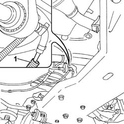
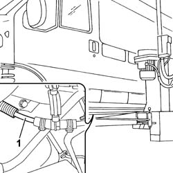

5020M32 FUEL DELIVERY PIPE FROM ELECTRIC PUMP TO INTERMEDIATE PIPE FOR SUPPLEMENTARY INDEPENDENT HEATER UNIT R R
- Path
- Procedures > 50 AUXILIARY UNITS > 5020 HEATER > 5020M SUPPLEMENTARY INDEPENDENT HEATER > 5020M32 FUEL DELIVERY PIPE FROM ELECTRIC PUMP TO INTERMEDIATE PIPE FOR SUPPLEMENTARY INDEPENDENT HEATER UNIT R R
- Kind
- repair procedure (removal / refitting; the operation number is the code)
- Applies to
- all engines; all production periods
- Interactive page
- https://sloeber94.github.io/elrnDB-fDct/en/#/244001254
Applies to: all engines; all production periods
 Removing
Removing
 Refitting
Refitting- Disconnect the negative battery terminal.
- Raise the vehicle on a lift.
- Position a suitable container for collecting the fuel.
1. Disconnect the fuel supply pipe from the pipe connector on the fuel pump for the additional independent heater loosening the retaining band.

Applies to: all engines; all production periods
1. Disconnect the pipe from the coupling with the additional independent heater intermediate fuel inlet pipe loosening the retaining band.
- Release the fuel pump supply pipe from the protective outer casing.

Applies to: all engines; all production periods
Refitting
Removing- Fit the pipe in the protective outer casing.
- Connect the pipe and connector on the fuel pump for the additional independent heater using the retaining band.
- Connect the pipe with the coupling with the additional independent heater intermediate fuel inlet pipe using the retaining band.
- Lower the vehicle on the lift.
- Connect the negative battery terminal.